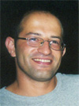

Eliav Gnessin
Attn - changed room : Room 032, Laboratories Building
Department of Electrical Engineering - Systems
The Iby and Aladar Fleischman Faculty of Engineering
Tel Aviv University
Ramat Aviv 69978
ISRAEL
+33 78 71 26 784 (France) +972 54 5661342 (Israel)
mailto:eliavg9@gmail.com
I got many requests for materials (especially the 8x06 assembly course) - looking for this homepage - so I decided to put it online again. Please note that I haven't updated the site for some years so expect broken links. You can contact me by e-mail. Note that I'm not at TAU anymore.
News
 [Nov. 1, 2008] I left Ness Technologies to start a business of my own.
[Nov. 1, 2008] I left Ness Technologies to start a business of my own.
[Jan. 1, 2003] I'm currently in a leave of absence until further notice. I'm working for Ness Technologies Inc.
[Nov. 16, 2002] The Goldschmidt algorithm project page is available here.
[Oct. 21, 2002] The alternate final exam (Moed B) in assembler will take place on Dec. 13, 2002.
[Oct. 19, 2002] The solution for the final exam in assembler is available at the course web-site (below). A quick link is available here [Hebrew PDF].
[Oct. 19, 2002] Grades for assembler/summer semester were posted. Check with the MTA secretary.
Academic
I've done research at the Computer Architecture Laboratory.
My research
interests are in the areas of Networking and Computer Architecture.
My current work is about Code Compression in Embedded Processors.
My instructor is Prof. Shlomo Weiss.
Teaching
I taught 121113 Computer Organization and the 8086 Assembly Language at the Academic College of Tel-Aviv-Yaffo in the spring and summer semesters, 2002.
The course homepage is available here.
My visiting hours are: Thu. 16:45-17:30. at the MTA (4 Antokolsky st., Tel-Aviv), room 204.
Professional
I'm Chief Technologist @ QuantumWave Capital.
I'm VP Development for TheSocialE.
I'm was Chief Technical Officer, Business Solutions Group in Ness Technologies Inc. Notable projects I was principal architect of include: NGCS (Next Generation Court System) [won Microsoft's Best Mission Critical System], rearchitecting LeumiTrade Israel [won two WebiAwards], Ministry of Justice web site [won best GOV site in Israel], and many more.
I'm a founding employee of New-X Systems Ltd., that was acquired by IPEX and later acquired by Ness Technologies Inc.
Last updated: March 2012.